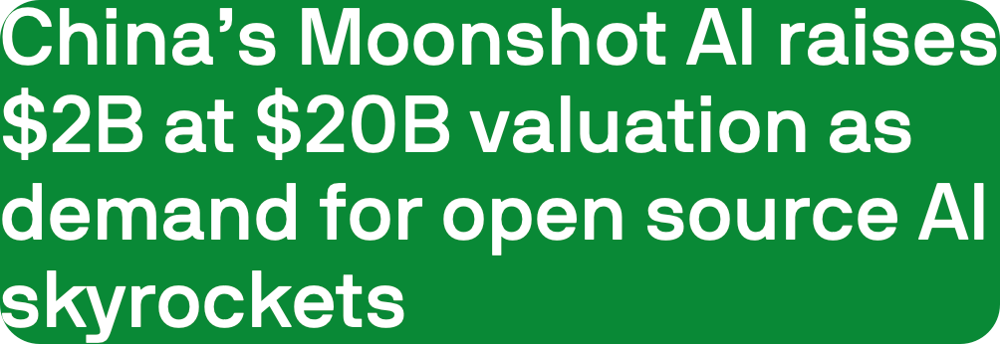
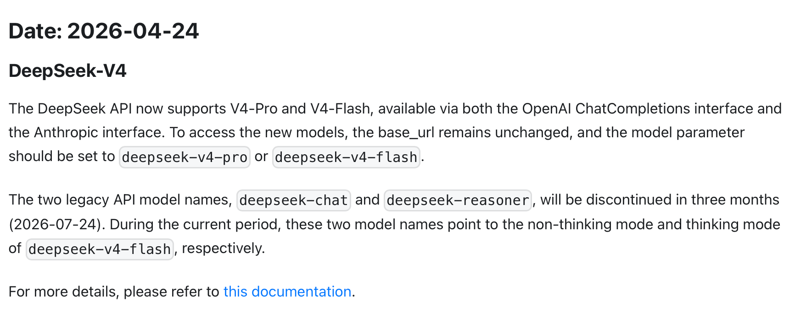
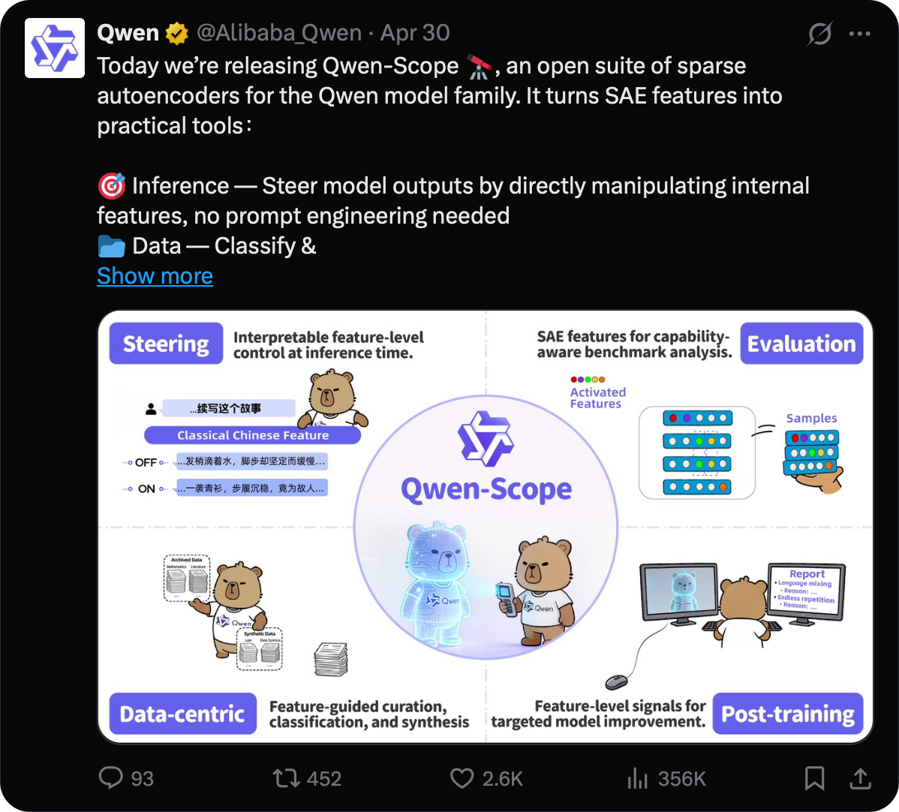
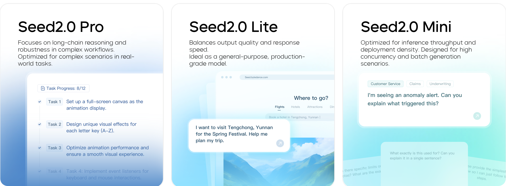
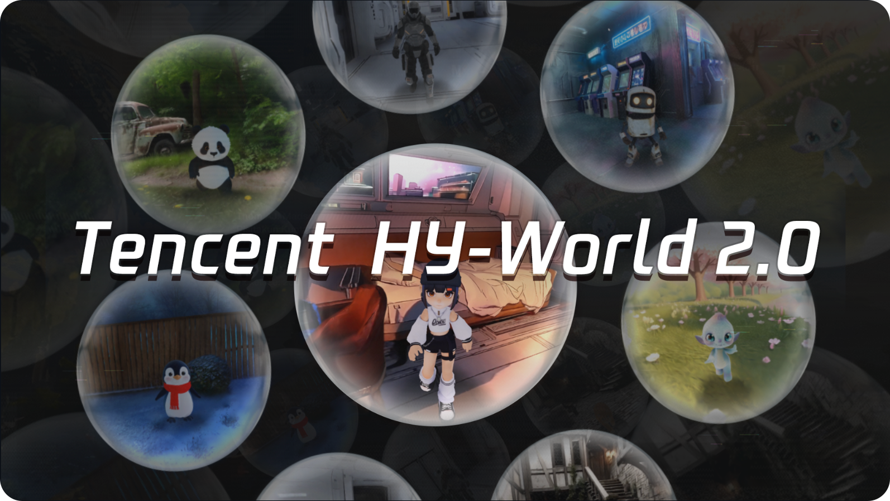

SuuJiKat AI Daily
不能只看 OpenAI 和 Claude：国内 AI 巨头正在抢另一半入口
2026-05-09 · 过去 24 小时 AIGC 大事件，每天更新
今天这期我想把视角稍微拉回来一点：
如果只看 OpenAI、Anthropic 和 Google，我们会漏掉 AI 竞争的另一半。
过去一周，国内 AI 的信号非常密集：月之暗面继续融资，DeepSeek V4 进入 API，阿里 Qwen3.6 加速开源和开发者生态，字节 Seed 系列把语音、视频、3D 都推向生产场景，腾讯混元则在 agent 和 3D 世界模型上继续补位。
今天最值得看的不是“谁又发布了一个模型”，而是：
AI 竞争正在变成两条路线同时推进：海外前沿模型往高风险系统和实时入口走，国内头部厂商则在开源、低成本、产品分发和多模态生产力上加速。
今日目录
🌕 月之暗面被曝完成约 20 亿美元融资，Kimi 继续押注开放模型和 agent coding
🔹 DeepSeek V4 进入 API，兼容 OpenAI 和 Anthropic 接口
🟣 阿里 Qwen3.6 开源推进，重点转向 agentic coding 和真实开发者工作流
🎬 字节 Seed2.0、Seedance 2.0、Seed3D 2.0 把 AI 推向内容生产流水线
🧩 腾讯混元 Hy3 preview 与 HY-World 2.0：一个做实用 agent，一个做 3D 世界
🔍 百度 ERNIE 5.0：搜索、数字人和应用分发仍然是大模型落地入口
🛡️ 海外线索：OpenAI 继续推进实时语音和 cyber 模型，Anthropic 继续补算力
🔎 今天的一个判断：AI 日报不能只盯“最强模型”，还要看谁能进入真实场景
01｜月之暗面被曝完成约 20 亿美元融资，Kimi 继续押注开放模型和 agent coding
发生了什么
TechCrunch 5 月 7 日报道，月之暗面 Moonshot AI 近期完成约 20 亿美元融资，估值约 200 亿美元。报道称，美团旗下 Long-Z Investment 领投，清华资本、中国移动、CPE 源峰等参与。
这条新闻和 Kimi K2.6 放在一起看更有意思。
Kimi 官方页面把 K2.6 定位为面向 coding、long-horizon execution 和 agent swarm 的开放模型。它不是只强调聊天，而是强调“从代码到产品”“从一个人到多 agent 协同”。

SuuJiKat 判断
月之暗面的关键不只是融资金额，而是它代表国内独立模型公司的一条路线：
用开放模型和开发者生态，去抢原本属于闭源大模型的 agent 工作流。
如果 Kimi 这种模型能在代码、长任务和 agent 协同里稳定可用，它影响的不是普通问答，而是创作者和开发者的生产方式。
对 SuuJiKat 来说，这类模型值得持续实测：不是问它“会不会写文章”，而是看它能不能持续跑一个 Harmony 工作流，能不能拆任务、保留上下文、调用工具、最后产出可用结果。
来源
TechCrunch - China’s Moonshot AI raises $2B at $20B valuation
02｜DeepSeek V4 进入 API，兼容 OpenAI 和 Anthropic 接口
发生了什么
DeepSeek 官方 API 文档显示，DeepSeek-V4 已在 4 月 24 日进入 API。
这次 API 支持两个模型：
· deepseek-v4-pro
· deepseek-v4-flash
更值得注意的是，DeepSeek 文档明确提到，新模型同时支持 OpenAI ChatCompletions interface 和 Anthropic interface。
另外，旧模型名 deepseek-chat 和 deepseek-reasoner 将在 2026 年 7 月 24 日后停止使用。在过渡期内，这两个旧模型名会分别指向 V4-Flash 的非思考模式和思考模式。

SuuJiKat 判断
DeepSeek V4 的重点不只是“又有新模型”。真正重要的是接口兼容。
当一个模型同时兼容 OpenAI 和 Anthropic 的调用方式，它就在降低迁移成本。开发者不需要重写整套系统，就能把模型接进已有工作流。
这也是国产模型非常现实的一条竞争路径：不一定每一项能力都要高举高打，但要尽可能低摩擦地进入工具链。
换句话说，未来模型竞争不只发生在 benchmark 上，也发生在 base_url、模型名、上下文长度、价格、延迟和迁移成本里。
来源
DeepSeek API Docs - Change Log
03｜阿里 Qwen3.6 开源推进，重点转向 agentic coding 和真实开发者工作流
发生了什么
阿里 Qwen 官方 GitHub 仓库显示，Qwen3.6 是 Qwen 模型家族的最新系列之一。
官方介绍里有几个关键词很清楚：
· Agentic Coding
· repository-level reasoning
· Thinking Preservation
· Qwen Code / Qwen Agent
· OpenAI / Anthropic compatible API
Qwen3.6-35B-A3B 已在 4 月 16 日上线 Hugging Face Hub 和 ModelScope。
Qwen 这条线现在不是单点模型发布，而是模型、API、代码工具、agent 框架和本地/云端部署一起推。

SuuJiKat 判断
Qwen 的优势不是“中文大模型”这五个字，而是开发者入口。
它把模型权重、API 兼容、Qwen Code、Qwen Agent、ModelScope、Hugging Face 这些东西连在一起，本质上是在做一件事：
让国内模型更容易进入开发者的日常生产环境。
这对 Harmony 工作流很关键。
如果一个模型能在本地、云端、CLI、agent 框架之间顺滑切换，它就不只是聊天窗口，而是工作流里的可替换模块。
来源
04｜字节 Seed2.0、Seedance 2.0、Seed3D 2.0 把 AI 推向内容生产流水线
发生了什么
字节 Seed 这段时间的模型线非常密集。
Seed2.0 官方页面显示，它是一组通用 agent 模型，包括 Pro、Lite、Mini 三个尺寸，强调多模态理解、LLM 能力和长链路复杂任务。
Seedance 2.0 是新一代视频创作模型，支持文字、图片、音频、视频四种输入模态，并强化多模态参考、视频延长、视频编辑和音视频一体化生成。
Seed3D 2.0 则面向 3D 生成，重点是更高几何精度、更强材质质量和更好的下游可用性。
此外，字节还在 4 月发布了 Seeduplex，全双工语音大模型，强调“边听边说”，让语音交互从问答轮次走向更自然的实时对话。

SuuJiKat 判断
字节这条线和 OpenAI、Anthropic 不太一样。
它不是只围绕一个聊天模型讲故事，而是在把 AI 接进内容生产链：视频、语音、3D、实时互动、创作工具、平台分发。
这其实很符合字节的优势。它本来就有内容平台、推荐系统、剪辑工具、广告系统和海量创作者。
所以字节 AI 最值得看的不是“模型榜单第几”，而是它能不能把生成能力塞进创作者每天已经在用的工具里。
一旦这个链条跑通，AI 对内容创作的影响会非常直接：脚本、分镜、配音、视频、素材、3D 资产，都会变成可以反复实验的模块。
来源
ByteDance Seed - Seedance 2.0 Official Launch
05｜腾讯混元 Hy3 preview 与 HY-World 2.0：一个做实用 agent，一个做 3D 世界
发生了什么
腾讯近期有两条值得放在一起看。
第一条是 Hy3 preview。腾讯官方称，Hy3 preview 是 Hy 系列至今最智能的模型，在复杂推理、指令遵循、上下文学习、代码、agent 能力和推理性能上都有提升。官方还提到，腾讯从 2026 年 2 月起重建了预训练和强化学习基础设施，目标是让模型更适合真实业务使用。
第二条是 HY-World 2.0，也就是混元 3D 世界模型 2.0。腾讯云开发者社区介绍称，它是一个开源、多模态世界模型，可面向 3D 世界生成，并提供项目链接、GitHub 和试用入口。

SuuJiKat 判断
腾讯混元的看点不是一个，而是两个方向：
一个方向是 Hy3 这种更通用的 agent 能力，适合进入文档、会议、代码、办公协作。
另一个方向是 HY-World 2.0 这种 3D 世界模型，适合游戏、虚拟空间、数字孪生和交互内容。
这两条线如果以后能和腾讯自己的产品生态接起来，就会变成很强的分发能力。
AI 模型真正进入普通人生活，往往不是靠一个独立 App，而是靠已经存在的工具入口。
来源
06｜百度 ERNIE 5.0：搜索、数字人和应用分发仍然是大模型落地入口
发生了什么
百度 ERNIE 5.0 虽然不是今天的新发布，但它应该放进国内 AI 巨头地图里。
百度在 Baidu World 2025 发布 ERNIE 5.0，并将它定位为原生全模态基础模型，可以处理文本、图像、音频和视频。ERNIE 5.0 技术报告也把它描述为统一多模态理解和生成的基础模型。
TIME 对李彦宏的采访里，他提到百度做基础模型时采用 application-driven approach，也就是从搜索、数字人、直播电商等应用需求倒推模型能力。
SuuJiKat 判断
百度这条线容易被模型社区低估，因为它不像开源模型那样每天在 GitHub 上刷存在感。
但百度的核心优势是入口：搜索、AI 云、数字人、地图、内容分发。
大模型真正变成普通人的工具，不一定总是从一个独立聊天 App 开始，也可能从搜索结果、客服、直播间、办公云和营销系统里渗进去。
所以看百度，不是只看 ERNIE 5.0 跑分，而是看它能不能把模型能力变成搜索和商业系统里的默认能力。
来源
Baidu - ERNIE 5.0 at Baidu World 2025
TIME - Robin Li on China’s push to diffuse AI throughout society
07｜海外线索：OpenAI 继续推进实时语音和 cyber 模型，Anthropic 继续补算力
发生了什么
海外这边，过去两天仍然有几条重要线索。
OpenAI 5 月 7 日发布新一代 API 音频模型，把实时语音、翻译、转写和工具调用放进更完整的语音工作流。
Axios 还报道，OpenAI 正在向经过审核的网络安全防御者开放 GPT-5.5-Cyber 的 limited preview，用于关键基础设施防御场景。
Anthropic 则继续补算力。xAI 5 月 6 日宣布与 Anthropic 达成算力合作，Anthropic 将使用额外算力提升 Claude Pro 和 Claude Max 用户容量。
SuuJiKat 判断
海外前沿实验室的主线更像是：
实时入口、高风险系统、算力、可信访问。
国内头部厂商的主线更像是：
开源模型、低迁移成本、内容生产、多模态工具、产品分发。
这两边不是简单谁领先谁落后，而是在抢不同的入口。
一个抢“最强能力和高风险场景”，一个抢“更低成本和更大规模使用”。
来源
OpenAI - Advancing voice intelligence with new models in the API
Axios - OpenAI makes its Mythos rival more widely available to cyber defenders
今天的一个判断
今天这期最想修正一个视角：
AI 日报不能只盯 OpenAI 和 Claude。
OpenAI、Anthropic、Google 当然重要，因为它们还在定义前沿能力、安全边界和高风险系统。
但国内 AI 也不能只被当成“追赶者”。
DeepSeek 在接口兼容和低成本上做文章。
Qwen 在开源、API、代码工具和 agent 框架上做开发者生态。
Kimi 把开放模型和长任务 coding 继续往前推。
豆包 / Seed 系列把 AI 塞进语音、视频、3D 和内容创作链。
腾讯混元则同时押注办公 agent 和 3D 世界生成。
百度则提醒我们，搜索、云和商业应用入口仍然是大模型落地的硬通道。
这些信号合在一起说明一件事：
下一阶段 AI 竞争，不只是谁的模型最聪明，而是谁能成为更多工作流里的默认零件。
对创作者来说，真正该关心的问题也许不是“哪个模型赢了”，而是：
哪个模型、哪个工具、哪个平台，能让你更快完成一次实验，并把这次实验变成可复用的方法。
这也是 SuuJiKat 会继续盯国内 AI 巨头的原因。
因为人类接近智慧的第一条路，是不断实验。
而现在，实验的成本正在被这些模型一点点压低。
SuuJiKat AI Daily｜AIGC 见闻、AI 使用心得与 Harmony 工作流记录。